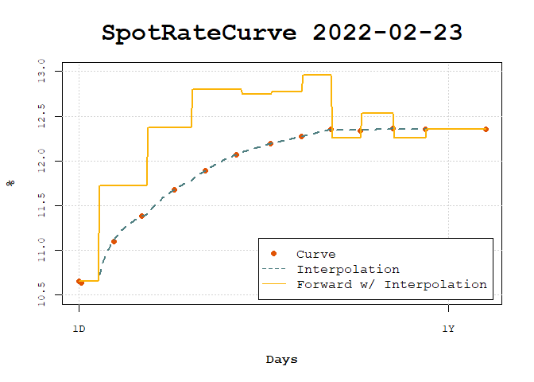

The goal of copom is to interpolate term structures of interest rates taking into account the meetings where the regulators discuss the changes on interest rates.
In Brazil these meetins are called COPOM and this interpolation considers that the interest rate between COPOM meetings are flat, instead of being flat betweet bonds maturities.
This is mainly for the short term of the term structure where the interpolation is used to price private bonds and interest rate derivatives.
Installation
You can install the development version of copom from GitHub with:
# install.packages("devtools")
devtools::install_github("wilsonfreitas/copom")Example
library(bizdays)
library(fixedincome)
library(copom)
copom_dates <- as.Date(
c("2022-03-17", "2022-05-05", "2022-06-17", "2022-08-04")
)
terms <- c(1, 3, 25, 44, 66, 87, 108, 131, 152, 172, 192, 214, 236, 277)
rates <- c(
0.1065, 0.1064, 0.111, 0.1138, 0.1168, 0.1189, 0.1207, 0.1219,
0.1227, 0.1235, 0.1234, 0.1236, 0.1235, 0.1235
)
curve <- spotratecurve(
rates, terms, "discrete", "business/252", "Brazil/ANBIMA",
refdate = as.Date("2022-02-23")
)
interpolation(curve) <- interp_flatforwardcopom(copom_dates, "second")
plot(curve, use_interpolation = TRUE, show_forward = TRUE,
legend_location = "bottomright")